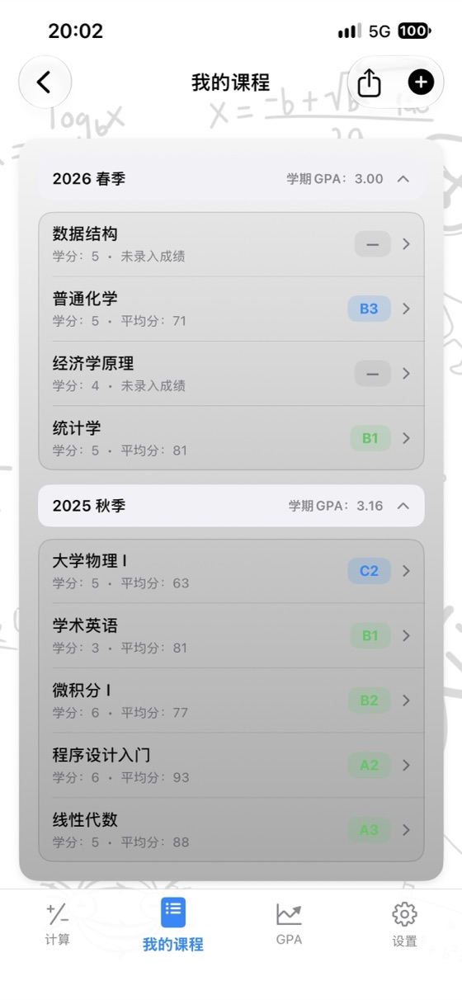
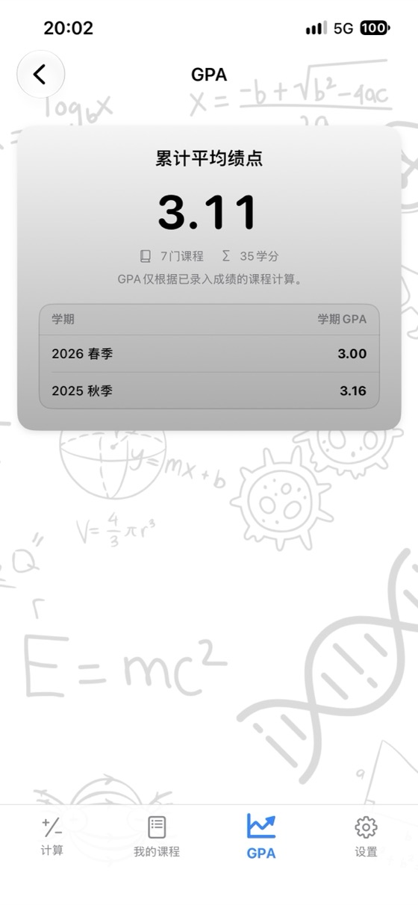
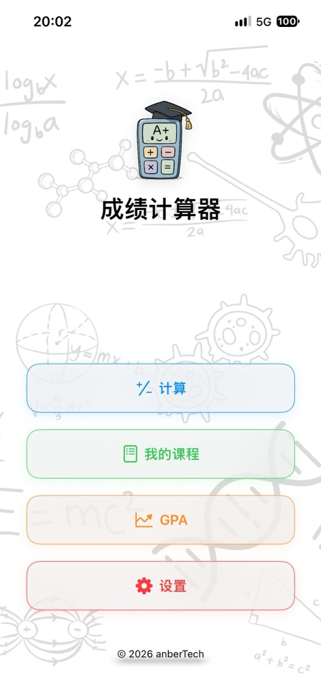
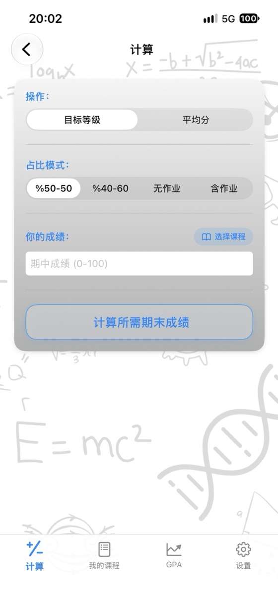
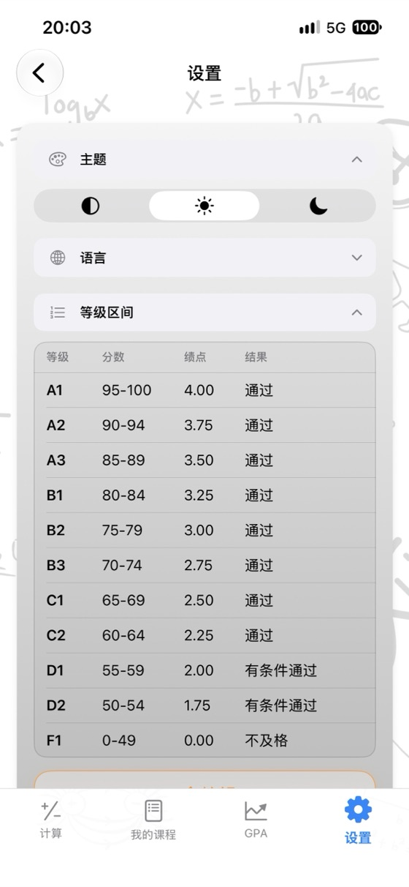

掌握你的成绩，
规划你的未来。
在一个应用中搞定课程平均分、所需期末成绩与 GPA 绩点计算。无广告、免注册账号、完全支持离线使用。
- ✓ 免费
- ✓ 无广告
- ✓ 免注册账号
- ✓ 支持离线


立即计算
下载应用前可先在此直接试用。修改数值后，计算结果会实时更新。
期末 (%): 60%
期末 (%): 60%
免费在线计算工具
无需下载任何软件，直接在浏览器中即可使用。免注册登录，你输入的成绩绝不会离开你的设备。
为什么选择成绩计算器？
课程平均分
输入期中、期末和平时作业成绩及对应权重，即可实时查看课程加权平均分与等级。
所需期末成绩
在同一页面一目了然地查看达到各个成绩等级所需的期末考试最低分数。
GPA 绩点管理
按学期保存你的课程，学期 GPA 和累计平均绩点会自动更新。
自定义评分标准
自由修改成绩等级区间与对应绩点，完美匹配你所在高校的教务规则。
PDF 成绩单
一键将你的课程列表与平均绩点导出并分享为 PDF 成绩单。
支持 17 种语言
提供简体中文、英语、西班牙语、德语、日语、阿拉伯语、土耳其语等多语言界面。
隐私至上
无需注册账号、无广告、无数据追踪。你的所有成绩数据仅保存在本地设备中。
离线可用
无需联网：无论是在考试周、图书馆还是任何地方都能随时使用。
应用界面预览



常见问题解答
课程平均分是怎么计算的？
将各项成绩乘以其对应的权重后再相加。例如期中占 40%、期末占 60%：平均分 = 期中 × 0.40 + 期末 × 0.60。若期中考了 62 分，期末考了 75 分，则平均分为 62 × 0.40 + 75 × 0.60 = 69.8。如果有平时作业成绩，也加上其加权分数；所有权重之和必须为 100%。
期末考试要考多少分才能及格？
所需期末成绩 =（目标平均分 − 期中成绩 × 期中权重）÷ 期末权重。假设期中 55 分（占 40%），及格线为总评 50 分：(50 − 22) ÷ 0.60 = 46.7，因此期末至少需要考 47 分。成绩计算器会一次性为你算出所有等级所需的期末分数。
GPA 平均绩点是怎么算的？
将每门课程的绩点（如 A = 4.0，B = 3.0……）乘以该课程的学分，将所有课程的结果相加后除以总学分，得出的就是你在 4.0 分制下的平均学分绩点（GPA）。
所有大学的等级分数区间都一样吗？
不一样。不同国家、不同大学甚至不同课程的等级换算区间和绩点都可能不同。在应用中，你可以自定义修改评分标准，使其完全符合你学校的规定。
什么是期末最低及格分？
部分高校规定，即使你的课程总评平均分达标，但如果期末卷面成绩低于某一分数线（例如 30、45 或 50 分），该课程依然算挂科。输入期末最低分要求后，系统在计算所需期末成绩时会自动将其纳入考量。
成绩计算器是免费的吗？
是的。本应用在 App Store 完全免费提供，无广告、无订阅、无任何应用内购买。本网站上的在线计算器也完全免费。
我的成绩数据保存在哪里？
仅保存在你自己的设备上。你不需要注册账号，也不会有任何数据上传到服务器。在网页计算器中输入的成绩也绝不会离开你的浏览器。
有 Android 版本吗？
Android 版本即将登陆 Google Play。目前你可以在 App Store 下载适用于 iPhone 和 iPad（需 iOS 17.6 及以上版本）的应用。
在一个地方轻松管理所有课程成绩
完全免费。无广告。免注册账号。